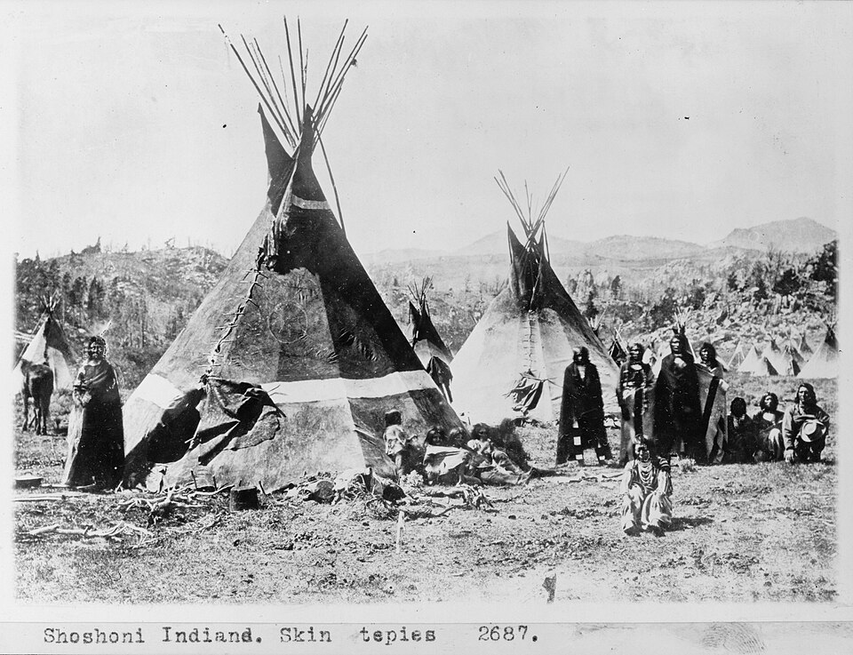
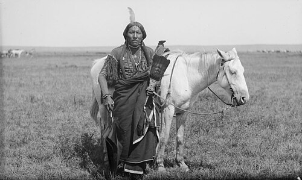
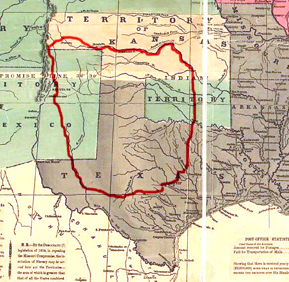
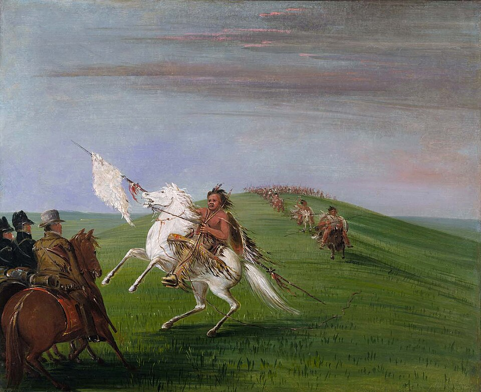
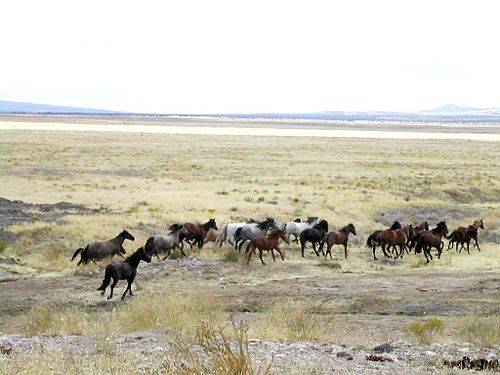
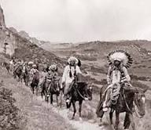
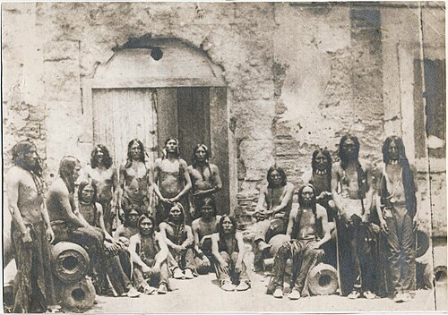

Lords of the Southern Plains: The Rise and Fall of the Comanche Horse Nation
The story of the Comanche begins not with horses, but with their absence. Before the 17th century, the Comanche were a modest tribe living on the fringes of the Great Plains, hunting bison on foot and trading with neighboring groups. Their transformation into one of North America's most formidable horse cultures would reshape the balance of power across an entire continent.
When Spanish horses first escaped or were traded northward from New Mexico missions in the early 1600s, the Comanche recognized their potential immediately. Unlike many tribes who adopted horses gradually, the Comanche became masterful horse people almost overnight. They developed breeding programs, raiding tactics, and riding techniques that made them legendary.

The Horse as Foundation
For the Comanche, horses were not mere transportation — they were the foundation of their entire society. A Comanche warrior's wealth was measured in horses, and their raiding parties could cover hundreds of miles in pursuit of the best breeding stock. Their ability to control the vast Southern Plains came from their horsemanship, not from any inherent military superiority.
The Comanche developed unique riding techniques that maximized their effectiveness in warfare. They rode with minimal tack — often just a rope halter — and could perform maneuvers that seemed impossible to European observers. Their ability to shoot accurately from a galloping horse, wheel suddenly to avoid pursuit, and control their mounts with just leg pressure and voice commands made them nearly unbeatable in battle.

Comanche Horse Culture — At a Glance
- Period of dominance: Approximately 1700–1875
- Territory: The Southern Plains — from the Arkansas River south to the Rio Grande
- Horse acquisition: Raiding, trading, and selective breeding
- Riding style: Minimal tack, leg and voice control, shooting from the saddle at full gallop
- Wealth measure: Horse herds — some warriors owned hundreds
- Key advantage: Speed, mobility, and the ability to cover vast distances in a single raid
- Decline: Buffalo extermination, reservation policy, and the destruction of horse herds

The Empire of the Southern Plains
At their peak in the 18th century, the Comanche controlled a territory larger than many European nations. Their empire stretched from the Arkansas River in the north to the Rio Grande in the south, and from the Rocky Mountains in the west to the Cross Timbers in the east. No tribe or European power could challenge them on the open plains.
This dominance came from their horsemanship, but also from their strategic use of horses in warfare. They would drive captured horses before them as they retreated, forcing pursuing enemies to either abandon the chase or risk losing their own mounts to exhaustion. Their hit-and-run tactics, made possible by their riding skills, kept even large military expeditions at bay.
"No people on earth have seen such a unity between horse and rider — where the animal does not carry the man but becomes him."

Breeding and Trade
The Comanche were not simply raiders of horses — they were sophisticated breeders and traders. They established extensive trade networks stretching across the Plains and into Spanish settlements, exchanging horses, mules, and captives for goods they could not produce themselves. Their herds grew into the tens of thousands.
They selected for speed, stamina, and temperament, favouring compact, hardy horses descended from Spanish stock. Their understanding of bloodlines and breeding was practical and accumulated over generations. The horses they produced were ideally suited to the demands of Plains warfare — quick to respond, calm under fire, capable of sustained effort across vast distances.

The Decline
The Comanche's dominance began to erode in the 19th century as American expansion brought new threats. The completion of the Santa Fe Trail in 1821 opened their territory to American traders and settlers. More devastatingly, the buffalo herds that sustained both the Comanche and their horses began to disappear due to commercial hunting.
The final blow came with the reservation system and the deliberate destruction of their horse herds. Without horses, the Comanche lost not just their mobility and hunting capability, but their cultural identity. The great horse nation of the Southern Plains was reduced to a shadow of its former self.

Legacy of Horsemanship
Yet the Comanche legacy endures in the techniques and traditions they developed. Modern ranchers in the American Southwest still use many Comanche-influenced methods. Their emphasis on the horse as partner rather than servant, their development of refined control through minimal equipment, and their understanding of horse psychology continue to influence equestrian practices today.
The Comanche story reminds us that horsemanship is not just about riding skill — it is about the deep cultural connection between people and horses that can transform societies and shape history. Strength here was not imposed. It was earned, through knowledge, relationship, and generations of accumulated trust.

Related Stories

Escaramuza: Women, Horses, and Tradition in Mexico's Arena
Set to music and performed at full gallop, Escaramuza brings eight riders into the arena as a single unit. Riding sidesaddle, they move through crossing lines and sweeping turns with precision and control.

The Horses of the Camargue
Tough, white, and semi-feral, the Camargue horse is a living part of southern France's wetland culture. This article explores the breed's origins, traits, and working life with the Gardians.
.jpg)
The Side Saddle: An Evolution Shaped by Constraint, Craft, and Culture
The side saddle was not a decorative tradition but a technical response to social constraint. This article traces its evolution from medieval Europe to its peak in British hunting.